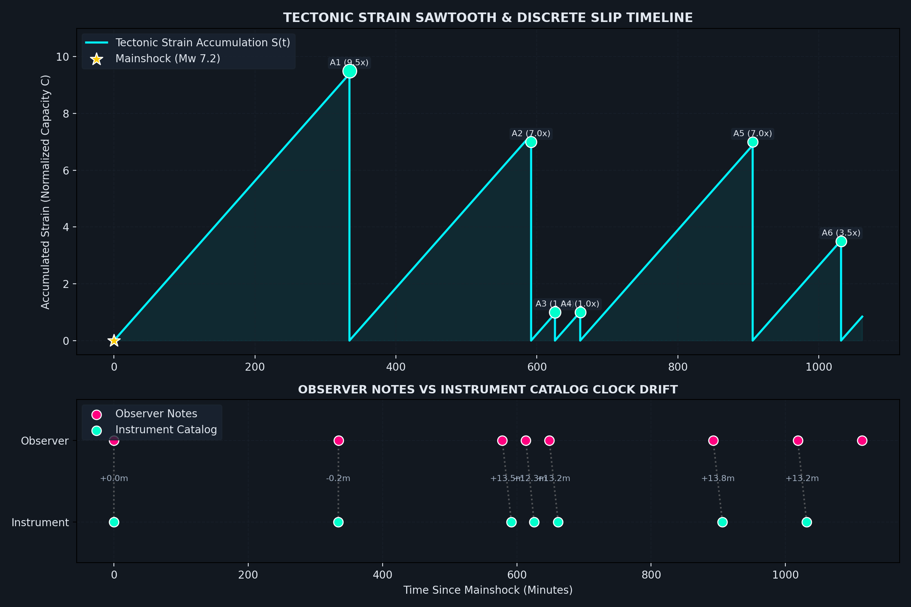

| Label | Timestamp | Interval | Status |
|---|---|---|---|
| MS | Jun 08 · 07:37 AM | — | ✓ Confirmed |
| A1 | Jun 08 · 01:12 PM | 334.3 min | ✓ Confirmed |
| A2 | Jun 08 · 05:16 PM | 244.0 min | ✓ Confirmed |
| A3 | Jun 08 · 05:51 PM | 35.0 min | ✓ Confirmed |
| A4 | Jun 08 · 06:26 PM | 35.0 min | ✓ Confirmed |
| A5 | Jun 08 · 10:30 PM | 244.0 min | ✓ Confirmed |
| A6 | Jun 10 · 12:36 AM | 126.0 min | ✓ Confirmed |
| A7 | Jun 10 · 02:12 AM | 96.0 min −28 min early | ✓ Confirmed |
| A8 | Jun 10 · 02:55 AM | 43.0 min +8 min | ✓ Confirmed |
| A9 | Jun 10 · 03:26 AM | 31.0 min −4 min early | ✓ Confirmed |
| A10 | Jun 10 · 03:36 AM | 10.0 min sub-pulse | ✓ Confirmed |
| Multiplier | Window | Expected Arrival | Remaining | Status |
|---|---|---|---|---|
| 1.0× | 35.6 min | Jun 10 · 04:11 AM | — | — |
| 3.5× | 124.4 min | Jun 10 · 05:40 AM | — | — |
| 7.0× | 248.9 min | Jun 10 · 07:44 AM | — | — |
| 9.5× | 337.7 min | Jun 10 · 09:13 AM | — | — |

Each rising diagonal line represents the fault silently building up stress underground. The tectonic plates are pushing against each other continuously — like slowly pressing down on a spring. When the spring can no longer hold, it releases. That release is the earthquake. The line drops vertically to zero, and the cycle begins again.
A higher peak means the fault held on longer before releasing — it accumulated more stress before finally slipping. A small 1× pulse (like A3 or A4) is the fault releasing at its minimum threshold. A large 9.5× event (like A1) means the fault skipped several smaller release opportunities and unleashed much more energy at once.
The fault has a natural “heartbeat” of about 35.5 minutes. Sometimes it releases every heartbeat (1×). Sometimes it holds through 3.5 or 7 or 9.5 cycles before releasing. These are the multipliers. They tell you how many heartbeats the fault skipped before it finally let go.
Two timelines are overlaid: the observer’s notes (manually recorded times) and the instrument catalog (official seismograph records). The small gap between them is “clock drift” — a tiny timing difference between human observation and machine timestamps. Both lines agree closely, which validates that the pattern is real, not an artifact of imprecise recording.